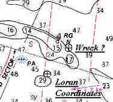

Link Index
MWDC
Home Page
Shipwrecks Page
Albert Galatin
Alice M. Colburn
Alice M. Lawrence
Ardandhu
Barge and Crane
California
Charles S. Haight
Chelsea
Chester Poling
City of Salisbury
Corvan
Dixie Sword
Edward Rich
French Van Gilder
Henry Endicott
Herbert
Herman Winter
Hilda Garston
HMCS St. Francis
James Longstreet
John Dwight
Kershaw
Kiowa
Lackawanna
Lunet
Mars
Pemberton
Pendleton
Pinthis
Port Hunter
Pottstown
Romance
Seaconnet
Trojan
USS Grouse
USS New Hampshire
USS Triana
USS Yankee
USS YSD
Vineyard Sound
Lightship
|
Description: Schooner barge, collier, 3 masted; Wood
Dimensions: length - 184.4 ft. width - 35.1 ft. depth - 16.2 ft.
Tonnage: gross - 839 other -
Propulsion:
Machinery:
Cargo:
The Shipwreck
Date Sunk: February 13, 1907.
Cause: Burned.
Location: Nantucket Sound, east of Nobska Light, Woods Hole.
Coordinates: Latitude, 41o - 30' - 59.2" N Longitude,70o - 37' - 41.211"W
Loran: 14120.6 and 43946.8
While bound from Boston for South Amboy, New Jersey, the schooner barge Pemberton caught fire off Nobska Point and burned to the waters edge. There were no fatalities, valued at $25000 the vessel was uninsured.
Back to Top
Dive Site Conditions
Depth in feet: maximum - minimum -
Visibility in feet: average - .
Loran C coordinates given by the Massachusetts Board of Underwater Archaeological Resources put Pemberton in Falmouth Harbor near the 29 foot depth reading on the map below.
However, primary source documentation only list the vessel as having "burned to the waters edge off Nobska [Point]".
Brad Luther, in his 1965 publication "The Vanishing Fleet", puts Pemberton;"11/4 miles E X N of Nobska Light, Woods Hole", in 37 feet of water at coordinates 41o - 31' -14" N and 70o - 37' - 38" W. These coordinates would put the wreck near the "RG" bouy.
For a wider angle view of the chart below click on the image.
Back to Top
Historical Background
Constructed: year - 1899 where - Bath, Maine
builder - Kelly, Spear & Company.
Construction details: .
Crew: 3 ; Master: E.L Snow (1899)
Owners: Staples Coal Company (1899).
Home or Hailing Port: Fall River, Massachusetts.
Former Name(s) and date(s): .
Official number: 150815. Country: U.S.A.
Other Comments:
Back to Top
Salvage
Back to Top
Sources:
MapTech Mapserver
A Maritime History of Bath Maine; Vol.II, Baker, 1973
Merchant Vessels of the United States; 1906
Merchant Vessels of the United States, Vessels Lost Chapter; 1907
New York Maritime Register; February 20, 1907
The Vanishing Fleet; Luther, 1965
Back to Top
These files are under construction. Any information, specifically dive site related, would be greatfully appreciated.
Send comments to: Chris Hugo
Copyright © 2000 by Christopher C. Hugo
Massachusetts Board of Underwater Archaeological Resources
All Rights Reserved
|